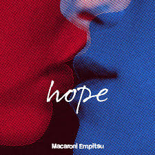
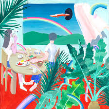

ハッピーエンドへの期待は
メジャー1stフルアルバム
「なんでもないよ、」や「ハッピーエンドへの期待は」を収録した、マカえんの名を世に知らしめた傑作。 バラエティ豊かな楽曲が詰まっていて、今の彼らの魅力が凝縮されています。
hope
2ndフルアルバム（インディーズ最後）

「恋人ごっこ」を収録。日常の不安や希望を、時に激しく、時に優しく歌い上げる バンドの初期から中期への進化を感じる一枚です。
CHOSYOKU
1stフルアルバム

「ミスター・ブルースカイ」など、マカえんのルーツを感じるポップでロックな楽曲が満載。 どこか懐かしく、何度聴いても飽きない魔法のようなアルバムです。